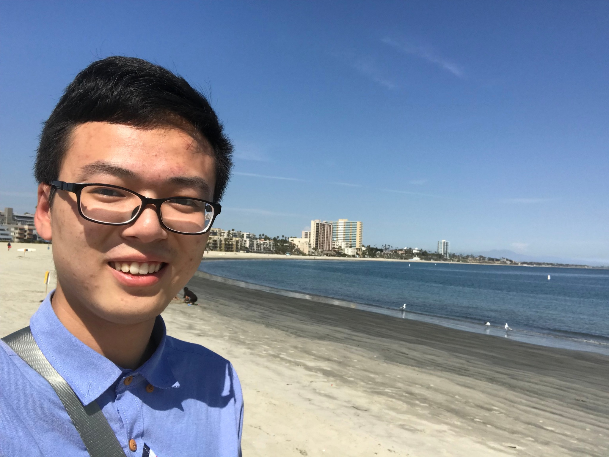
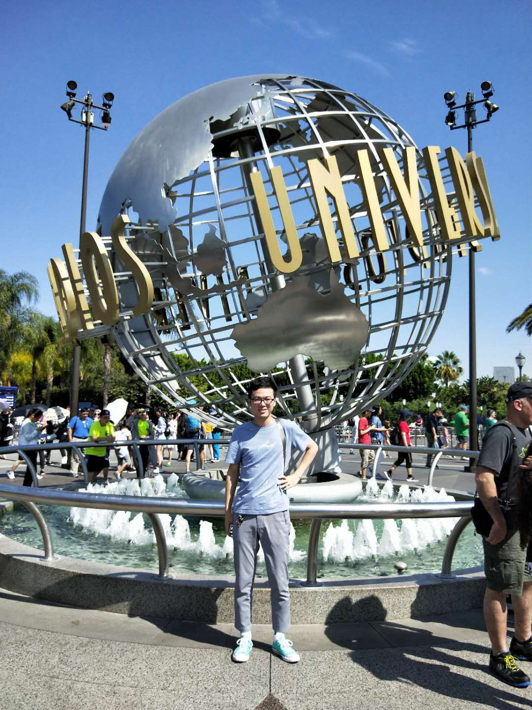
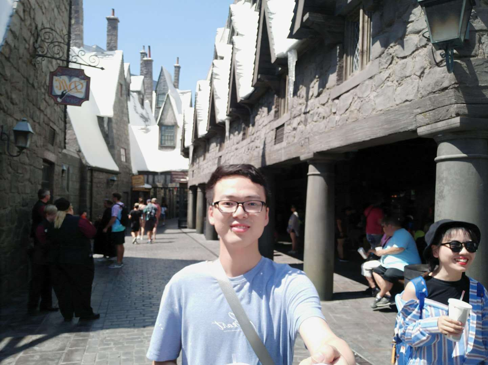
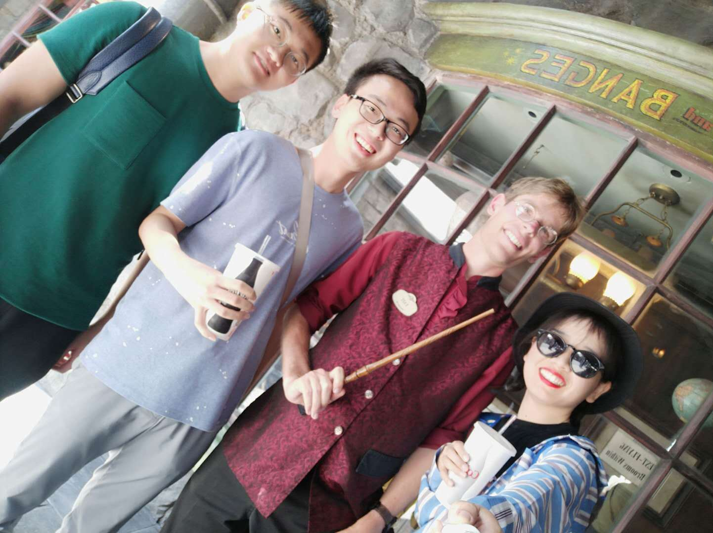
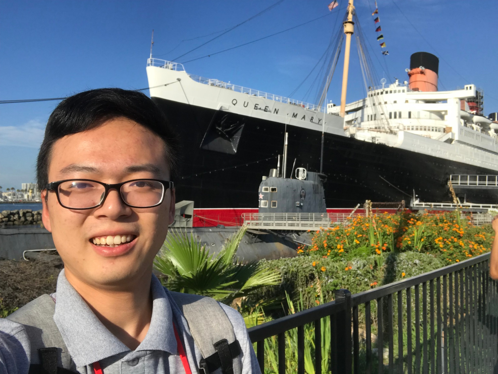
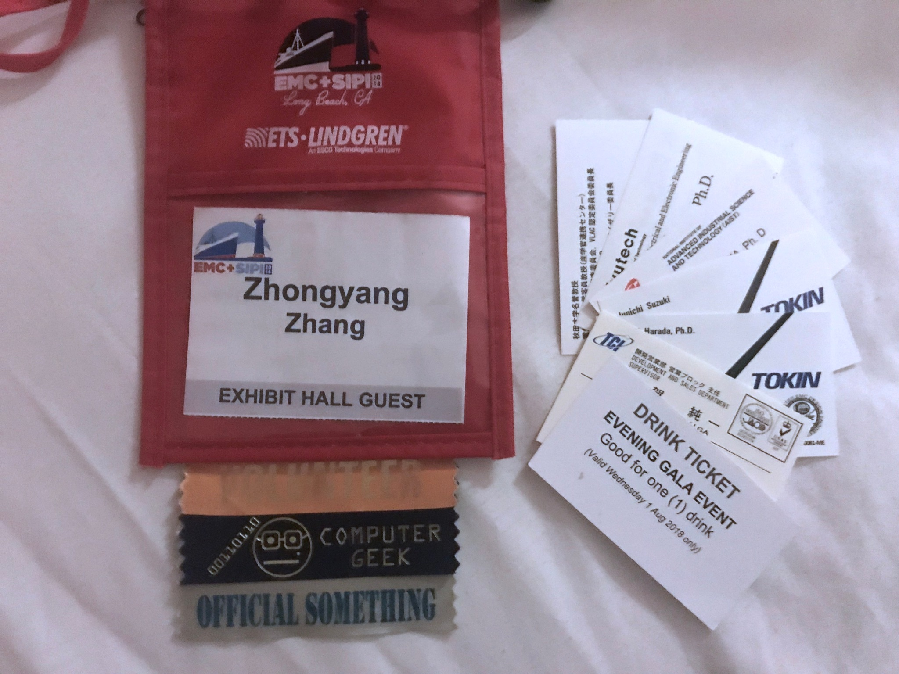
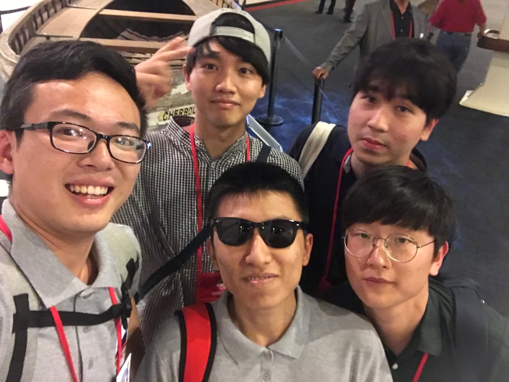

密苏里科技大学EMC Lab暑研 第三周
机翼拂过地表的风，穿过天边的云，越过无垠的大海与起伏的丘陵；极目远眺，无数的灯火点缀着这片宁静的夜。Los Angeles，我们的脚尖轻触这片多情的地，任生命的画卷被这座城浸染。
纵横交错的路携手含情脉脉的灯，编织出了一条条闪烁的金线；从高空俯瞰，这座四四方方的城市好似一块硕大无朋的电路板，流动的车与人则好似股股电流，于其间不知疲倦的穿梭往复。短短五天的洛杉矶之行，就此宣告拉开了帷幕。
本次出行是参加IEEE组织的EMC行业相当于年会的Symposium，既有学界各路大佬牛人宣讲其paper，也有业界各大公司商行来此做Exhibition，推广宣传其软硬件产品。我们一行人中，既有来做报告的导师及PhD的学长学姐，也有来做会议志愿者的实习生和研究生们，大家搭乘飞机，于周日晚抵达洛杉矶。

洛杉矶长滩海滩
细数起这几天的经历，惊喜地发现了诸多人生中的“第一次”。大到第一次在大型Symposium上做志愿者、第一次不靠别人引荐在宴会和Gala Banquet上和来自各个国家的大佬们“Social”、第一次真正意义上交到外国朋友、第一次用日语和一桌日本教授愉快交流、第一次拿到别人的名片，小到第一次住motel、第一次在美国搭乘Uber出行，第一次游玩环球影城，第一次吃甜甜圈状的汉堡。

环球影城标志

哈利波特小城

与“哈式”工作人员合影

玛丽皇后号
这片陌生的土地也告诉了我许多熟悉的道理：外语口语只有多用才能产生自信、努力工作将会得到赏识、只有大胆追求机会才会来临、陌生人通过交流会变成可爱可敬的人。刚来到这里时其实胆怯和保守心理还是占据上风的，尽量避免和陌生人产生不必要的会话，尽量少搭话防止打扰大佬们，展会上展示的东西都是我不清楚的而且也不会去买所以还是别去以防尴尬，社交晚会很庸俗尽量远离为好等等。但这些天中不断发生着的A到Z，都渐渐扭转了我之前执拗而有失偏颇的想法。大佬们虽然确实很优秀，但他们也并不会因此就鄙视别人，拒绝谈话；虽然展会上展出的东西的确你都不会买，但那也不是想卖给个人的，去转转还是挺有趣的；社交晚宴确实挺吵闹，但就是在那里我终于和同为实习生的3位韩国小哥成为了朋友，并得以认识了不少来自世界各地的有趣而有料的教授和会社人；多张口问别人问题、与人交流并不会因为poor的口语而被嘲笑，而是渐渐增强了自信，更敢于和别人用各种外语交流了。

志愿者证与在Banquet收到的名片

在玛丽皇后展馆中和韩国小哥们合影
当然，除了成长，洛杉矶也给我们带来了实实在在的堪称享受的娱乐活动。长滩午后海滨的慵懒与放松，环球影城各种项目带来的好莱坞级别级别的感官刺激、身临其境的电影艺术体验、从历史到当代最先进电影技术带来的思想碰撞，玛丽皇后号上对沧桑历史的认知和顶级banquet带来的极致奢华的体验，如果平日里的成长与体验是沙漠中的风对岩石的雕琢，那相信这些天来所有经历过的这一切会像地震和火山喷发般以极其浓缩的能量剧烈地塑造我心中的版图，撼动地基深厚的偏见的高山，并用喷薄而出的养分造就一片片新的沃土。
新的一周又即将来临，命运石之门又会带来些什么惊喜呢？
2018.8.3